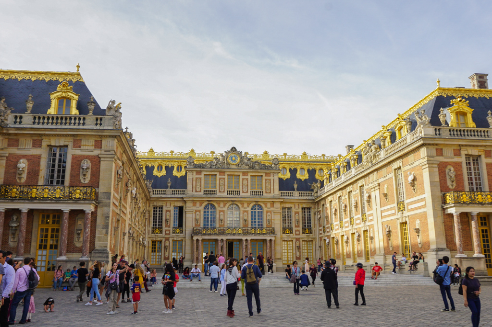
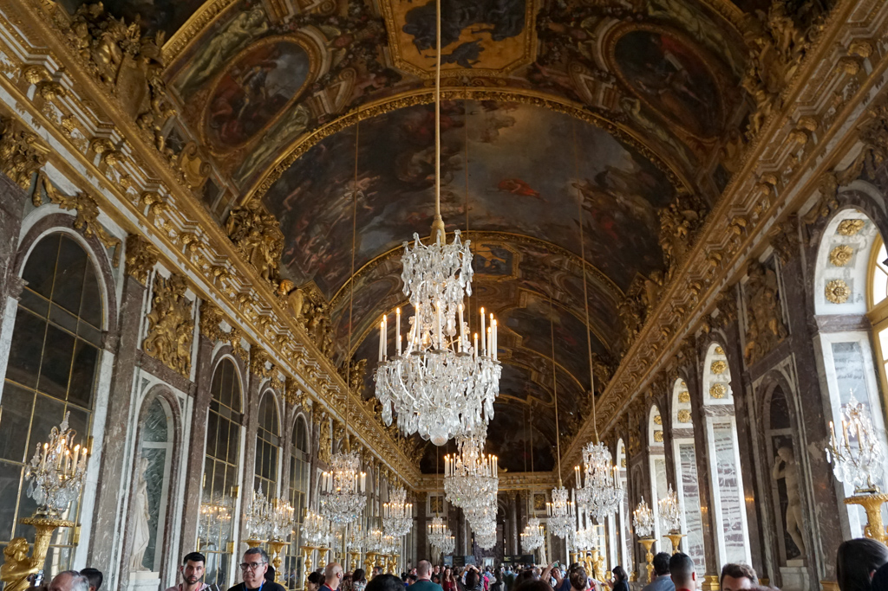
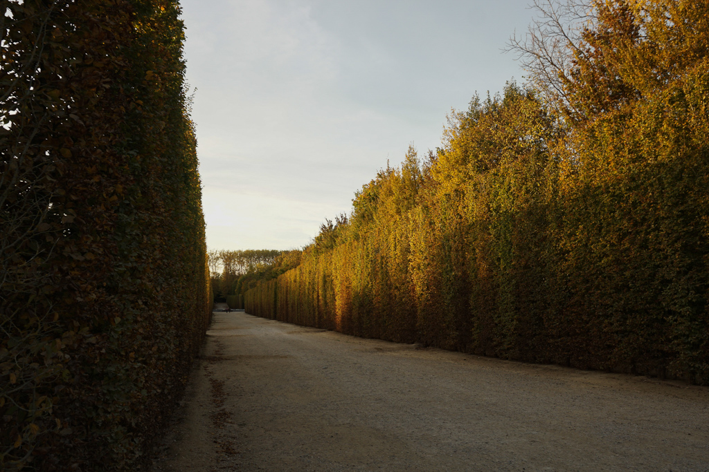
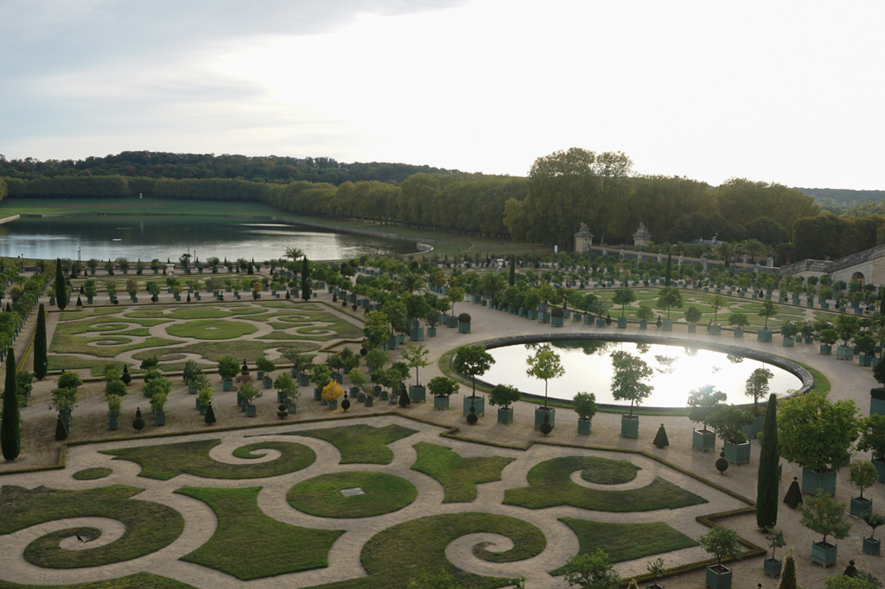
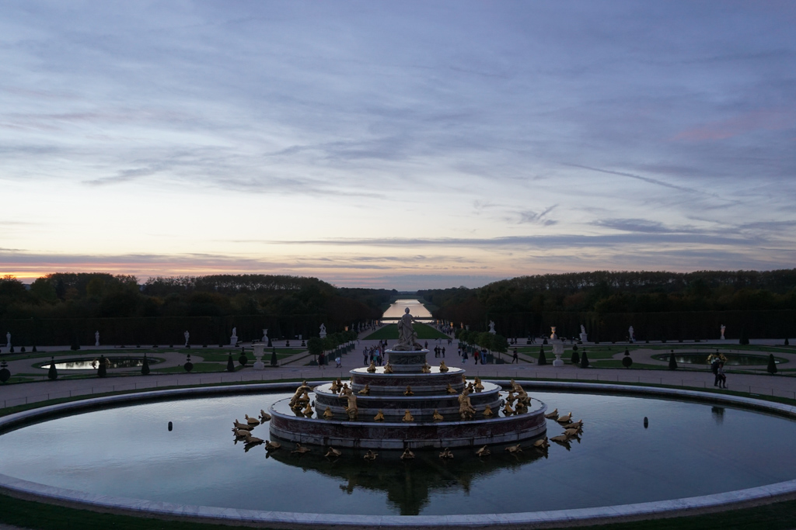

A Day in Versailles
Oct 29 - Written by Bonnie
We know Paris has enough museums to visit and walks along the Seine to fill up your whole trip, but don’t forget about the beautiful place just outside the city -- Versailles.
Who would’ve thought Paris could get even more beautiful than it already is. Palace of Versailles is only a quick train ride away where you can get lost in the gardens, hedges, and history for a full day. I stayed at Versailles from early afternoon to early evening to get the full glory of the palace and gardens during peak golden hour and during the beautiful sunset that painted the sky a mix of purple, blue and pink.
To enjoy the full experience of the Palace, I suggest hopping on the RER C after a nice café au lait by the seine before starting off your day. Once you reach the Versailles Chateau/Rive Gauche station, hop off the train and follow the crowd! (or the signs laid out). Its a quick 10 minute walk to the gold metallic entrance of the palace. Don’t forget to see if you’re applicable for any student, tourist, or elderly discounts before you buy your tickets!
Once, you’ve made your way through the entrance, you can take your time exploring the palace itself where you’ll see a plentiful of richly decorated rooms and living areas in which the French royals had wined and dined. Don’t forget to grab your audio guides from either of the two entrances on opposite sides of the palace building. Most of all, don’t forget to take a picture in the infamous Hall of Mirrors near the end of your visit!
Despite how breathtaking the palace rooms already are, theres even more to see. Before you begin your walk through the maze called the Palace Garden, don’t forget to grab a few macaroons or another cafe au lait at the Laduree tucked in the corner of the palace. Once you’ve made your way outside into the gardens, a never ending view of trees, hedges, and water greets you.
Take a long walk through the different gardens and try to find the hidden fountain show in the video above! Some people also enjoy renting bikes at the entrance of the garden to cycle around since the area is so large, but if you don’t mind taking a nice and peaceful stroll, you can make your way to Marie Antoinette’s Estate to see even more infrastructure and have another quick snack break before making your way back to the palace to take a beautiful sunset picture in front of the famous Bassin de Latone.
